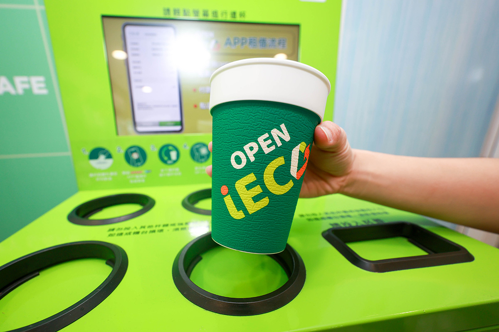
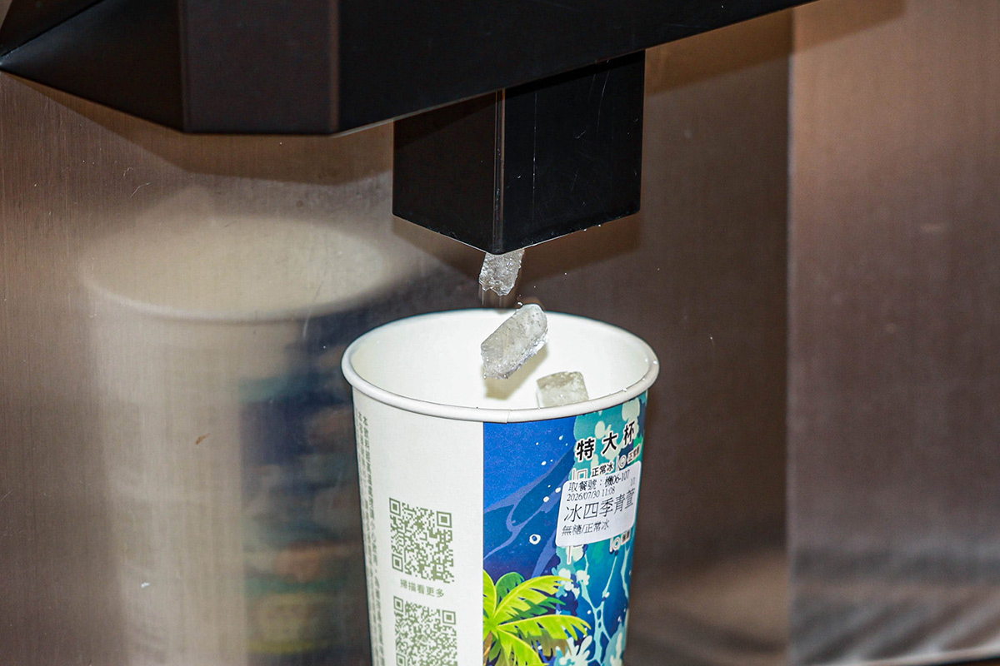
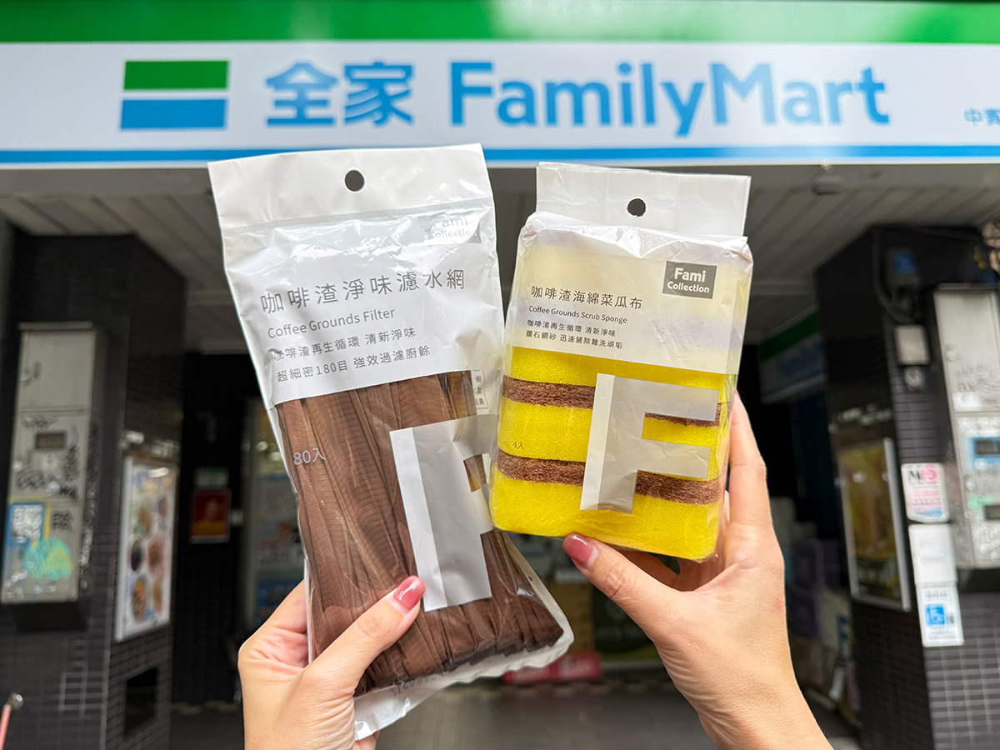
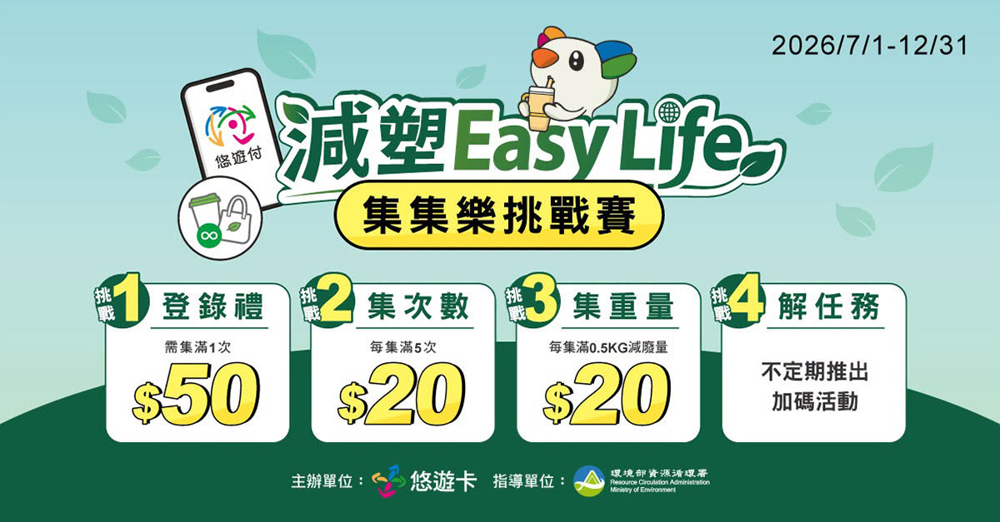

從杯子到咖啡渣，超商雙雄「5元折扣」激發綠色消費力
◎ 報導／陳詩璧
◎ 攝影／華子琛
◎ 圖片來源／全家・悠遊卡公司提供
◎ 發布日期／2026.08.20

◎ 報導／陳詩璧
◎ 攝影／華子琛
◎ 圖片來源／全家・悠遊卡公司提供
◎ 發布日期／2026.08.20
自環境部推動「自帶飲料杯折抵5元」政策以來，全台自帶杯使用率已達到18%。統一超商與全家便利商店觀察發現，民眾使用自帶杯的意願顯著高於循環杯，結合通路自身的加碼折扣、設備源頭減塑與廢棄物循環再利用，減塑行為已逐步融入消費者的日常生活。
政策誘因是改變消費者行為的關鍵。統一超商統計顯示，自帶杯使用率從2022年的12%大幅成長至2026年的22%，四年內成長了10％。分析指出，折扣優惠從原本的3元提升至5元是帶動成長最明顯的階段；搭配行動隨時取及世界地球日等特殊活動，自帶杯折扣最高可達7元，以門市最便宜35元的咖啡計算，一杯僅需15元左右，極具吸引力又實惠的價格大幅提升了消費者的使用意願。
全家便利商店則透過「自帶杯優惠」與「循環杯服務」雙軌並行推動減量，自2024年1月至2026年6月止，已累計減少逾1.12億個一次性飲料杯。全家亦於每月6日「好咖日」將自帶杯折抵提高至8元，持續透過多元情境提升民眾對減塑的參與度。

▲ 統一超商投入千萬建置歸還站以及清洗相關設備，讓循環杯保有一定的品質。（圖／華子琛攝）
相較於自帶杯的快速普及，循環杯的成長相對較為緩慢。統一超商分析，民眾選擇自帶杯主要是因為能「即時獲得優惠」；而循環杯通常需要透過APP操作並支付50元押金，使用門檻相對較高。為提高使用便利性，業者持續優化借還機制：
● 統一超商：投入千萬元建置歸還站點，並與星巴克串聯，實現跨品牌門市互還服務。
● 全家便利商店：將循環杯服務導入約1,440家店舖，主打「免押金、出示會員條碼」即可跨店借還；同時配合特定飲品半價等優惠推廣。
針對循環杯的推廣策略，環境部資源循環署永續消費回收組科長盧秀卿指出，半封閉或半開放式場域（如音樂祭、運動賽事、電影院與棒球場等）非常適合導入循環杯。雖然此類場域營運需要支付少許押金或服務費用以維護循環產業運作，但目前多數消費者已能接受，未來官方將持續擴大相關場域的合作範疇。

▲ 統一超商導入製冰機之後，節省了袋冰運送產生的碳足跡。（圖／華子琛攝）
除了鼓勵消費者自備容器，門市設備的創新也是減塑關鍵：
1. 製冰機導入：統一超商自 2022年起陸續導入門市製冰機，以減少冰塊塑膠包裝袋的使用。截至2025年已累計導入4,604家門市，總計減塑305.70公噸，同時節省了冰塊運輸過程中的碳足跡。
2. 封膜機取代杯蓋：自2023年起導入封膜機以減少一次性塑膠杯蓋，並將其納入新開與改裝門市的標準配置。2025年裝機店數已達5,200店，單杯可減少約2.52公克塑膠量。自2023年至今，已累計減少約1.17億個一次性杯蓋，減塑效益約294.85公噸，大幅超過原定目標。

▲ 全家把Let's Café咖啡渣粉變再生材料，應用延伸至高頻的居家清潔場景。（圖／全家提供）
在咖啡廢棄物處置方面，全家便利商店導入IoT智慧乾燥設備，先於店舖端完成咖啡渣乾燥處理，再透過既有逆向物流系統集中回收至物流中心，大幅降低含水率並提升後續再利用價值。該計畫未來將擴展至六都共2,140家店舖，預計每年可回收約2萬噸咖啡渣。
在材料應用上，全家跨界攜手歐萊德將咖啡渣與牛奶空瓶再製為洗髮精容器，並進一步開發出「咖啡渣淨味濾水網」與「咖啡渣海綿菜瓜布」等生活用品；同時透過「友善地圖」APP功能，讓民眾即時查詢即期鮮食，將惜食與減塑無縫融合於既有消費流程中。

▲ 環境部資源循環署和悠遊卡公司合作，推出減塑Easy Life活動，集點、次數贈送現金回饋券。（圖片來源／悠遊卡公司提供）
針對部分民眾建議將自帶杯折抵拉高至8至10元，環境部資源循環署永消一科科長盧秀卿回應，從社會經濟學角度來看，過高折扣會增加店家的營運成本，進而可能轉嫁為物價上漲因素，因此官方暫不考慮提高法定折抵金額。
為持續誘發減塑動力，環境部轉向與企業開展跨界合作。例如與悠遊卡公司推出的「減塑 Easy Life」活動，自2026年7月1日至12月31日推出挑戰賽，民眾透過悠遊付APP完成登錄並累積減塑紀錄（自帶杯、循環杯或指定場域使用環保袋），即可領取50元現金回饋券（限量1萬份）；達成指定次數（5至20次）還可階梯式加碼領取20元現金回饋券，透過多元誘因讓綠色習慣真正落實於生活。


新聞部
副總經理 王結玲
陳致中・陳詩璧・胡瑞麒・華子琛・談雍雍・吳家瑜
節目部
T觀點／莊開文・吳家瑋・莊秀惠・趙昱涵
數位事業部
總監 郭瀧億
內容策展組／廖玉貞・彭嘉儀・林佳瑤・李佳綺
ESG永續發展部
賴盈文・蔣成偉・張玲玲・黎育如・徐新瑜

© TVBS Media Inc. All Rights Reserved｜聯利媒體股份有限公司